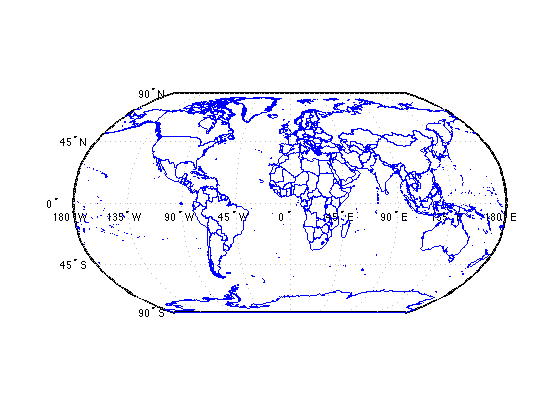
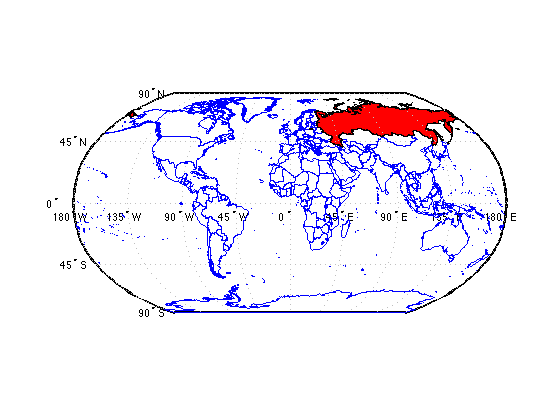
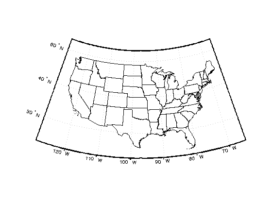
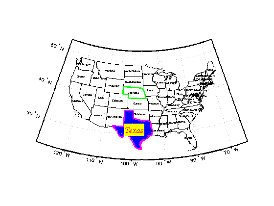
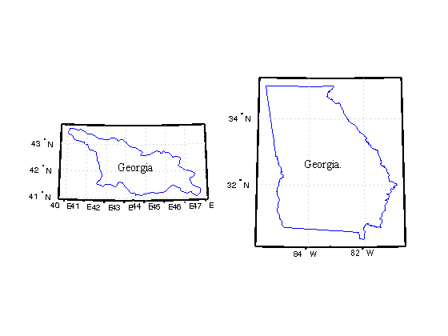
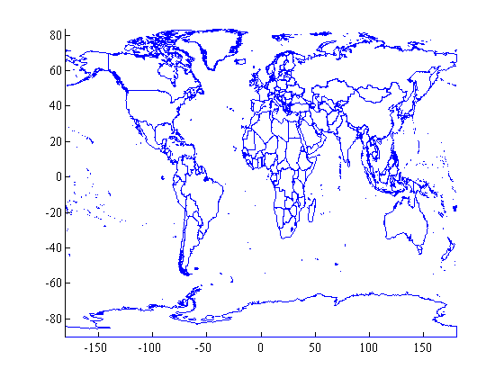
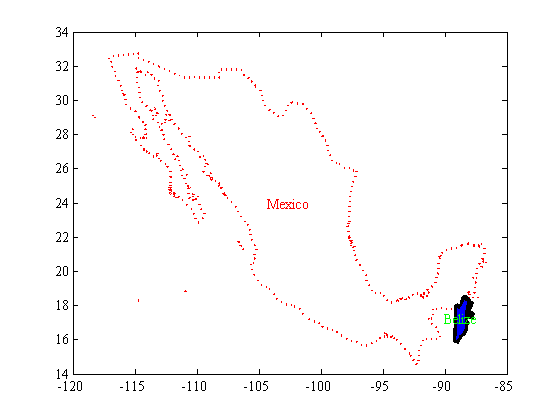

borders documentation
This function plots borders of nations or US states. This function does not require Matlab's Mapping Toolbox. Data are compiled from 2013 US Census Bureau 500k data and a thematicmapping.org TM World Borders 0.3 dataset.
Contents
Syntax
borders borders(place) borders(...,LineProperty,LineValue) borders(...,PatchProperty,PatchValue) borders(...,'NoMappingToolbox') h = borders(...) [lat,lon] = borders(place)
Description
borders plots national borders.
borders(place) plots the borders of a place, which can be any country or US state. place may also be 'countries' to plot all national borders, 'states' to plot all US state borders, or 'Continental US' to plot only the continental United States (sorry Guam). Note: to plot the nation of Georgia, use 'Georgia'. To plot the US state of Georgia, specify 'Georgia.' with a period.
borders(...,LineProperty,LineValue) specifies linestyle or markerstyle.
borders(...,PatchProperty,PatchValue) outlines states or nations as patch objects if any property begins with 'face', (e.g., 'facecolor','red'). Note that plotting all countries as patches can be a bit slow.
borders(...,'NoMappingToolbox') plots data in plain old unprojected cartesian coordinates by plot(lon,lat). If you do not have Matlab's Mapping Toolbox, this option is selected automatically. If you do have Matlab's Mapping Toolbox, but you do not want to plot in map axes, include 'NoMappingToolbox' or simply 'nomap'.
h = borders(...) returns a handle h of plotted object(s).
[lat,lon] = borders(place) does not plot any borders, but returns arrays of their geographic coordinates.
Example 1: Very simple
To plot all national borders, just type borders:
borders
Example 2: Red Russia, red Russia
Add Russia to the map as a big red patch:
borders('russia','facecolor','red')
Example 3: Continental US
Open a new figure and plot the continental United States oulined in black:
figure borders('continental us','k')
Example 4: Fancy formatting
Let's turn Texas blue (that'll be the day), give it a thick magenta outline, and give Nebraska a thick green outline. The labelborders function works just like the borders function.
borders('texas','facecolor','blue','edgecolor','m','linewidth',2) borders('nebraska','g','linewidth',2) labelborders('continental us','fontsize',6); labelborders('Texas','color','r','backgroundcolor','y',...'fontangle','italic','fontsize',16)
Example 5: Georgia vs. Georgia.
There are two Georgias. To distinguish between them, I've placed a period at the end of the US state called Georgia. Let us compare:
figure subplot(121) borders 'georgia' labelborders 'Georgia' subplot(122) borders 'georgia.' labelborders 'Georgia.'
Example 6: Data only
Just want the outline of a country or state without plotting it? Using borders with two outputs returns lat, lon arrays without plotting.
[lat,lon] = borders('kenya');
Example 7: No Mapping Toolbox? No problem!
You don't need Matlab's Mapping Toolbox to use this function. If you do not have the Mapping Toolbox, the 'nomap' option is selected by default. I do have the Mapping Toolbox, so if I don't want data plotted in map axes, I have to specify 'nomap' like this:
figure borders('countries','nomap') axis tight
Example 8: Formatting without the Mapping Toolbox
With or without Matlab's Mapping Toolbox, formatting patches and country outlines is easy:
figure borders('mexico','r:','linewidth',2,'nomap') hold on borders('belize','facecolor','b','linestyle','-','linewidth',3,'nomap') labelborders('Mexico','color','r','nomap') labelborders('Belize','color','g','nomap')
Author Info
The borders and labelborders functions were written by Chad A. Greene of the University of Texas at Austin's Institute for Geophysics (UTIG), April 2015.